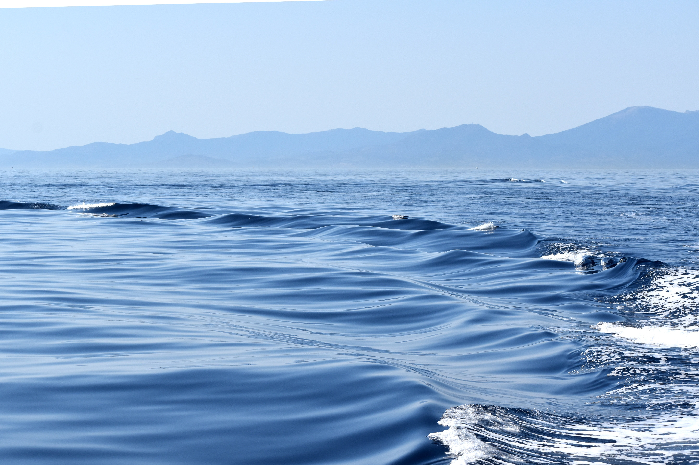
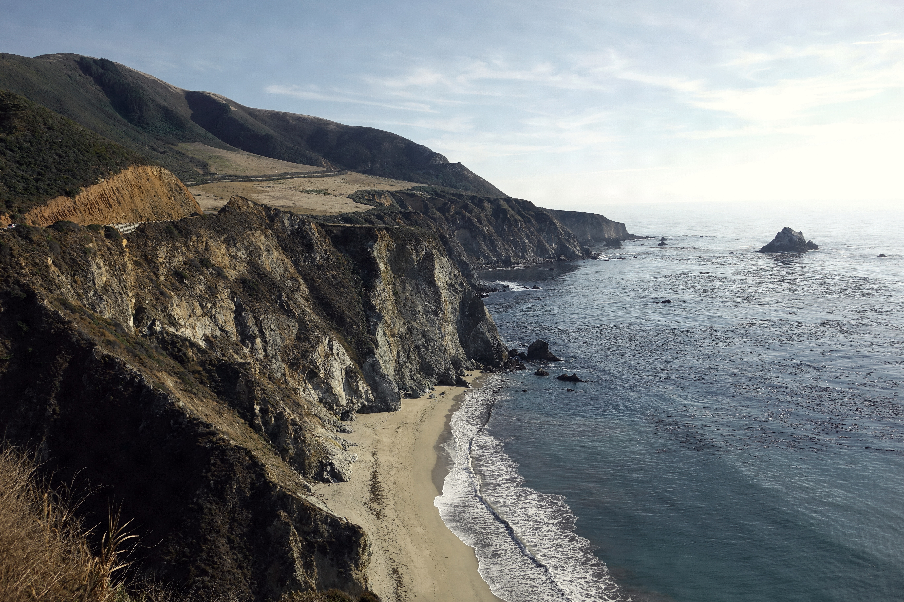

Our Mission
Pacific Trails Resort is dedicated to providing guests with a relaxing outdoor experience. Guests can hike the beautiful coastline of Big Sur or bask in the golden California Sun. Pack light clothes with many layers because nights here get chilly!
Pacific Trails Resort's amenities include stellar bird watching, hiking along the coast, kayaking, and so much more! Whether you enjoy outdoor activities, or relaxing waves, Pacific Trails Resort has you covered.

Our Values
- Hospitality and service
- Relaxation among nature
- Nature, right at your fingertips
- Open communication and transparency
Pacific Trails Resort
12010 Pacific Trails Road
Zephyr, CA 95555
888-555-1212
Our Story
Pacific Trails Resort started off as a humble, coastal resort with one goal in mind. Becoming the top rated Northern California resort was easier said than done. As of today, we have catered to over half a million guests and have no intent on stopping anytime soon. We are commited to profesionalism and ensuring you have the most relaxing stay here at Pacific Trails Resort.
